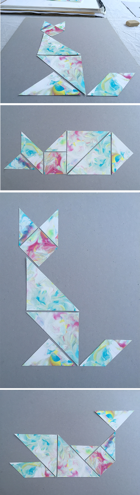

Como en este post hemos hecho papel jaspeado. Hemos usado un papel con un poco mas grueso. Luego hemos cortado el papel en forma de tangram. Pega tu forma favorita encima de un papel de color... i ya tienes el cuadro perfecto para tu habitación!
